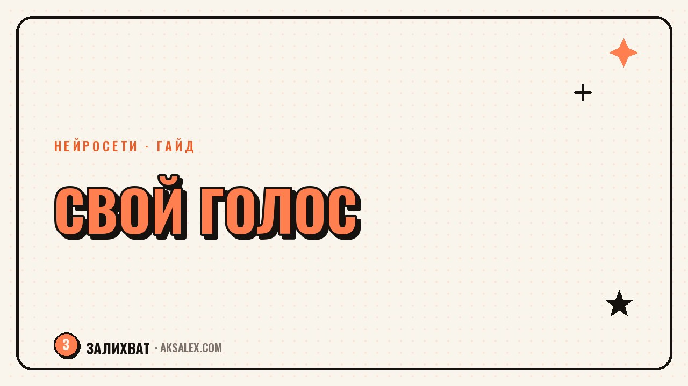

Свой голос в блоге: чтобы AI-текст не звучал безлико

Текст от нейросети выдаёт себя мгновенно: гладко, правильно и абсолютно безлико. Читатель чувствует, что за словами нет живого человека, и проходит мимо. Но нейросеть не обязана лишать блог голоса - если использовать её как черновик и оживлять результат. Разберём, по каким признакам узнают машинный текст, какими приёмами вернуть в него свой голос и как вообще нащупать этот голос, если кажется, что его нет.
Почему AI-текст звучит безлико
Нейросеть усредняет. Она выдаёт наиболее вероятные, а значит самые обкатанные формулировки - те, что встречались миллион раз. Отсюда гладкость без шероховатостей, правильность без характера. Текст технически хорош, но в нём нет ни одной фразы, которую сказала бы конкретно ты.
Живой текст держится на неровностях: личных деталях, неожиданных сравнениях, своей интонации, мнении. Именно это нейросеть сглаживает в первую очередь. Поэтому её черновик - хорошая заготовка, но плохой финал: его нужно вернуть к жизни своими руками.
Машинный текст безлик не потому, что плохой, а потому, что усреднённый. Голос живёт в деталях, которые нейросеть сглаживает.
Признаки машинного текста
Чтобы оживлять, надо сначала научиться замечать безликость. Вот типичные маркеры, по которым читатель считывает нейросеть.
- Общие вступления вроде «в современном мире» и «в наше время».
- Гладкие, но пустые фразы без конкретики и примеров.
- Одинаковый ровный ритм: все предложения средней длины.
- Обтекаемость: нет мнения, всё «важно» и «нужно».
- Канцелярит и штампы вместо живой разговорной речи.
Когда видишь эти признаки в черновике, это карта для правок. Каждый маркер - место, где нужно вставить себя: конкретику, мнение, живую интонацию. Так безликий текст превращается в твой.
Приёмы, чтобы вернуть свой голос
Оживление текста - это набор конкретных действий, а не магия. Пройдись по черновику от нейросети и примени приёмы из таблицы.
| Что сделать | Как | Что даёт |
|---|---|---|
| Добавить деталь | Вставь случай из своей жизни | Достоверность |
| Сломать ритм | Чередуй короткие и длинные фразы | Живое звучание |
| Вставить мнение | Скажи, что думаешь ты | Характер |
| Убрать штампы | Замени общие фразы конкретикой | Свежесть |
| Заговорить вслух | Перепиши, как сказала бы вживую | Твоя интонация |
Особенно работает чтение вслух. Прочитай текст и там, где спотыкаешься или звучит не по-твоему, перепиши так, как сказала бы в разговоре. Ухо ловит фальшь лучше глаза - если фраза звучит не как ты, её слышно сразу.
Как нащупать свой голос
Многим кажется, что своего голоса у них нет. На деле он есть у каждого - это то, как ты говоришь с друзьями, какие слова любишь, над чем шутишь, что тебя цепляет. Голос не придумывают, его замечают и переносят в текст.
- Запиши, как рассказываешь историю голосом, и расшифруй - там твой ритм.
- Отметь слова и обороты, которые часто используешь в жизни.
- Пиши так, будто объясняешь одному конкретному другу.
- Не бойся эмоций и мнения - они и есть твой голос.
Голос крепнет с практикой. Чем больше пишешь от себя, тем яснее проступает узнаваемая манера. Со временем читатели начинают узнавать тебя по паре фраз - это и есть признак, что голос найден.
Ошибки при работе с AI-текстом
Первая ошибка - публиковать черновик нейросети без правок. Даже беглое оживление лучше, чем сырой машинный текст. Вторая - копировать чужой голос, потому что он кажется удачным. Чужая манера всегда звучит натянуто, свой неидеальный голос ценнее.
Третья ошибка - бояться шероховатостей и вылизывать текст до стерильности, снова превращая его в безликий. Живость и есть в неровностях. Четвёртая - использовать нейросеть для всего подряд без своего участия. Пусть она делает черновую работу, а голос, мнение и тепло остаются твоими.
Частые вопросы
Почему текст от нейросети звучит безлико?
Она усредняет и выдаёт самые обкатанные формулировки без личных деталей и мнения. Получается гладко, но без характера. Голос живёт в конкретике и интонации, которые нейросеть сглаживает.
Как сделать AI-текст живым?
Добавь личные детали и мнение, сломай ровный ритм чередованием фраз, убери штампы и перепиши так, как сказала бы вслух. Чтение вслух хорошо ловит места, звучащие не по-твоему.
Как узнать машинный текст?
По общим вступлениям вроде «в современном мире», гладким пустым фразам, ровному ритму, отсутствию мнения и канцеляриту. Эти маркеры - карта мест, куда нужно вставить себя.
Что делать, если кажется, что своего голоса нет?
Голос есть у каждого - это как ты говоришь с друзьями. Запиши устный рассказ и расшифруй, отметь любимые слова, пиши будто объясняешь одному человеку. Голос замечают, а не придумывают.
Можно ли вообще использовать нейросеть без потери голоса?
Да, если брать её как черновик, а не финал. Пусть делает черновую работу, а мнение, детали и тепло добавляешь ты. После правки текст должен звучать как ты, а не как сеть.
Раз тема оказалась полезной, вот что почитать следующим. С каких нейросетей начать маме в декрете, чтобы вести блог без лишней траты времени и нервов.
Читать статью →а не вручную